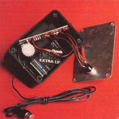
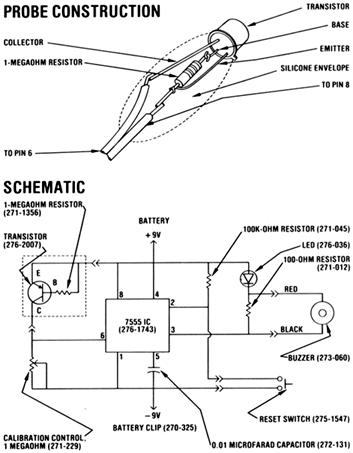

Why take the chance of ruining the precious produce in your icebox, when you can build.
Freezing is one of the best-and most popular-methods of preserving food . . . but unlike canning or drying, it's continually dependent on a sometimes undependable machine. And nothing is more disheartening than opening a freezer door, only to discover that all your goodies have completely thawed. This agonizing experience can be avoided, though, if you equip your appliance with MOTHER's "freezer fever" alarm.
The device requires two basic elements: a thermometer (which continuously monitors freezing compartment temperature) and a comparator circuit (which decides when the thermometer reading has gone too high). Thanks to modern electronics, these can be assembled, from about 15 simple electronic components, for less than $20.
THE THERMOMETER
The part of the alarm that actually goes into the freezer consists of a germanium transistor (which allows more current to pass as temperature increases) with a 1-megaohm resistor soldered between its base and emitter leads. Only two of the transistor's leads (the emitter and collector) need be connected to the comparator circuit, but they must both be properly polarized. Color-coded speaker wire works well for this task.
The transistor must also be well protected from moisture, so-once you have the resistor and speaker wires soldered to the leads-be sure to apply a liberal coating of silicone sealer (the bathtub variety) both around its base and on the exposed wires.
THE COMPARATOR
Even though the comparator components could be assembled in several different ways, the use of a printed circuit board will make the job easy and nearly foolproof. (See the schematic for access information.) The components are merely slipped through their respective holes and soldered in place. Do note, however, that both the integrated circuit and the light-emitting diode (LED) must be installed in the proper direction. Also, be sure to leave the leads on the LED long enough to allow it to be fitted into a hole in the top of the box that will enclose the circuit board.
Actually, several different openings must be drilled in the box. A 3/16" hole in the top will allow the LED to poke through . . . you'll need a bore in the back large enough to insert a screwdriver to adjust the potentiometer . . . and a small opening will have to be drilled in the bottom to allow the probe wires to be passed through. Then, in the aluminum front panel, bore one small hole to accommodate the buzzer wires and another that'll allow you to mount the reset button. (The latter opening must be slightly off center to clear the circuit board and battery.)
At this point, you can solder the wires for the buzzer and the reset switch to the appropriate points on the circuit board (be sure to connect the buzzer with proper polarity). Then pass the probe wires through the hole in the bottom of the case, tie a knot in them so they can't pull through, and solder them to the positive and negative points on the board. Finally, slide the LED through the viewing hole in the top and glue the circuit board against one side of the case, using plastic cement.
CALIBRATION AND USE
First, turn the calibration control completely counterclockwise and insert the battery. With the probe at room temperature, a slight twist of the control should sound the alarm and flash the light. Now, you can place the probe in your freezer. Since it will sense the temperature only in its immediate vicinity, be careful not to set the transistor directly on a cake of ice or too close to the door. You'll find that it's best to locate the device well back from the door and suspended in the air.
Once the probe has had a few minutes to stabilize in temperature, adjust the control until the alarm sounds . . . and then back off slightly. Thus, whenever the temperature inside rises above that set point, you'll have plenty of warning of the impending thaw.
If you decide to tackle this project, you'll be glad to know that the alarm is "latching" . . . that is, once it's tripped, it will continue to sound until the reset button is pushed, even if the interior temperature drops. Therefore, if your freezer thaws and refreezes in your absence, you'll know that it has done so immediately upon your return. And should your alarm tell you that the worst has occurred, you might want to refer to the center spread of MOTHER NO. 74 to find out "What to Do When Your Freezer Fails".
|
 CALIBRATION AND USE |
 |
|